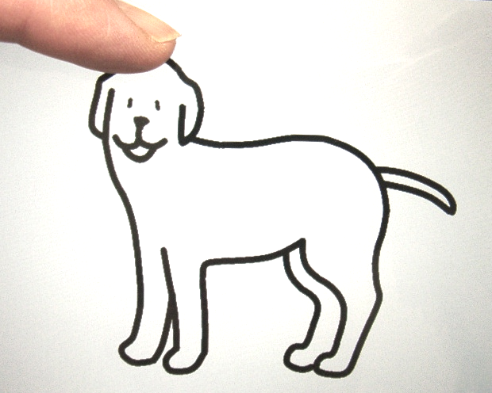

かならずお読みください→
だれでも あそんで かまいません
あたまをなでられてよろこんでいるいぬ
人間といぬのつきあいはもうずいぶん長いそうで、古い遺跡から一緒に発掘されたりするそうです。このくらい縁が深いと、いろいろふしぎなことも見かけるようになります。例えば、多くのいぬはひとによくなつきますが、特に人間のこどもとは仲良しになるようです。こどももはじめていぬをみたときは怖がりますが、しばらくすると慣れて一緒に遊んだりしています。
片言しか言葉をはなせない小さなこどもでも、まるでことばが通じないはずのいぬとは、気持ちはよく通じているようです。こんな関係もなかなか不思議です。
かつてわたしのこどもがお世話になっていた保育所にはご近所の大きなピレネー犬がよく遊びにきて（もちろん飼い主さんも一緒に）いました。そのいぬは保育所の玄関にごろりと寝転んで、その周りをピレネー犬よりもずっと小さい園児たちがとりかこんで、なでたり引っ張ったり座ったりするのですが、されるのままに任せてゆったりとしっぽをぱたぱたさせていました。
さて前回は、パソコンのマウスクリックやタブレットのタップでワンとほえるいぬを紹介しました。いかがでしたか？
こんなおもちゃでもしばらく熱心に遊んでもらえると、スイッチ選びとか適合とか調整などの仕事がうまくできます。またその人の好みやくせ、得意なことや苦手なこと、そして身体の調子などもうまくすると観察できるでしょう。おとなのみなさんもおもちゃであそんで一緒におもしろがっているふりをして、見るところは見て、やるべきことは着々と進めていただきたいと思います。
さて今回は、タブレットのタッチパネルにさわったりなでたり、またはパソコンではマウスカーソルを動かせる人のための試作品を作ってみました。今回も前回と同様に、マウス操作が苦手な人のための各種代替マウス（例えば視線入力など）なども使えます。
いぬはうれしいときしっぽをふります。いぬはあたまやせなかをなでてやると喜びます。そこでタブレットでは、いぬのあたまをまでてやると、（パソコンではマウスカーソル（マウスの矢印のことです）でなでてやると、）よろこんでしっぽをふり「クーン」とないて甘えます。せなかをなでても同じです。
またいぬはしっぽをひっぱられるといやがります。そこでそっとしっぽにさわってみてください。するとぴんとしっぽをたてて、ワンワンほえます。
まとめると、あたまやせなかをなでてあげるとよろこんでしっぽをふります。しっぽをひっぱるとおこってほえます。
むかし、おじさんはちいさいときに、近所のいぬのしっぽをひっぱって、おこったいぬにかまれてびっくりしました。みなさんも気をつけましょう。
スイッチ操作を練習するときには、身体が動いてスイッチをおすのも大事ですが、スイッチとその結果のつながりがわかっていることはもっと大事です。このようなことを『因果関係』といいますが、ちいさなこどもたちはまだおぼえなくていいです。
でも、『なでるとよろこぶ』と『しっぽをひっぱるとおこる』これだけはしっかりおぼえておいてください。
もしわすれちゃってもタブレットやパソコンには歯がないのでかみつきません。でも本当のいぬはとがった歯があります。（全部犬歯です。）だから痛いです。おぼえなくてもいいこともありますがおぼえてほしいこともあります。しっかりおぼえて仲良くなってください
まず、前回と今回の2つの試作品について違いをみてみましょう。
前回の試作品はタッチパネルのタップ（またはパソコンのマウスクリック、代替マウスやスイッチを含む）で、ワンとほえてしっぽがあがりました。これに比べ今回の試作品はタッチパネルの3つのある場所をこする（またはマウスカーソルをその場所に移動させる）と、2種類の声を出して動きをします。操作のための身体的動作の面でも、3種の操作と2種の結果の理解の面でもちょっとむつかしくなっています。そのほか外見などはほとんどおなじです。
ここでもし片方がうまくできるのにもう片方がうまくいかない場合、原因は双方の違いにあるはずです。こような方法を用いることでそのひとの『苦手』がどのあたりにあるのか絞り込んでいくことができるでしょう。
また、初級、中級、上級と難易度の異なる課題のどこかでつまづくとしたら、もっと細かな（例えば10段階とか100段階など）段階わけした課題なら、ステップがむりでもスロープなら上がれるのと同じく、もっとうまくいくかもしれません。 しかしこのような取り組みは、これまであまり行われてきませんでした。
なにしろ、微妙に違うよく似た例えば100種類の道具（教材、おもちゃなど）の準備はかんたんではありません。しかし情報機器はそんなことがかなり得意です。そうです日付と内容の一部が微妙に異なる書類をつぎつぎつくるときに使う、みなさんご存じのあの情報機器です。
もうひとつ、こどもさんで機器操作支援を進める際にはある種のむつかしさがあります。
おとなの場合は、何かの目的のためいろいろやった経験も理解もあります。また病気や怪我で不自由になったとして、代わりの手段（福祉用具など）について考えるのにその体験を活かすことができます。 機器操作支援はその人のやりたいこととできることを結びつける取り組みと考えられます。これはおとなでもこどもでも同じことです。
おとなは『目的』や『手段』について考えることができます。しかし幼いときから不自由で体験がすくないこどもさんはなかなかうまくいきません。しかたがありませんので、まわりのおとなが考えて、決めてこどもはそれに従うことになります。 スイッチの練習もおとなにほめられ、よろこばせることが目的になりがちです。まあ初めのうちはそれでもいいのですが、やがては 『こうすればこうなるからじぶんはそれをやる』 というのを自分で考えるようになる練習は必要です。多分スイッチ操作よりもずっと大切です。しかし経験が少ないこどもさんはこれは簡単ではありませんのでまわりの大人の配慮が必要です。
『こうすればこうなる』という因果関係は、テレビのリモコンにも10種類以上入っています。これらを理解し覚えたうえで、見たい番組をみるのが目標なのです。 しかしいきなりリモコンでは覚えきれずに無理もありますので、おもちゃで遊びながら少しづつ前進していってほしいと思います。
その後、ちいさいころのおじさんはかまれたいぬのところにあそびにいきました。
するといぬは大きな骨をもらってガシガシ、ガシガシと噛んでいるところでした。大きな口や歯を見ていたら、そのいぬはずいぶん加減して噛んでくれたんだとわかってなんだかうれしくなりました。おしまい。
2022/03/04 公開
研究企画課リハ工学科にもどる
←もくじはこちらです